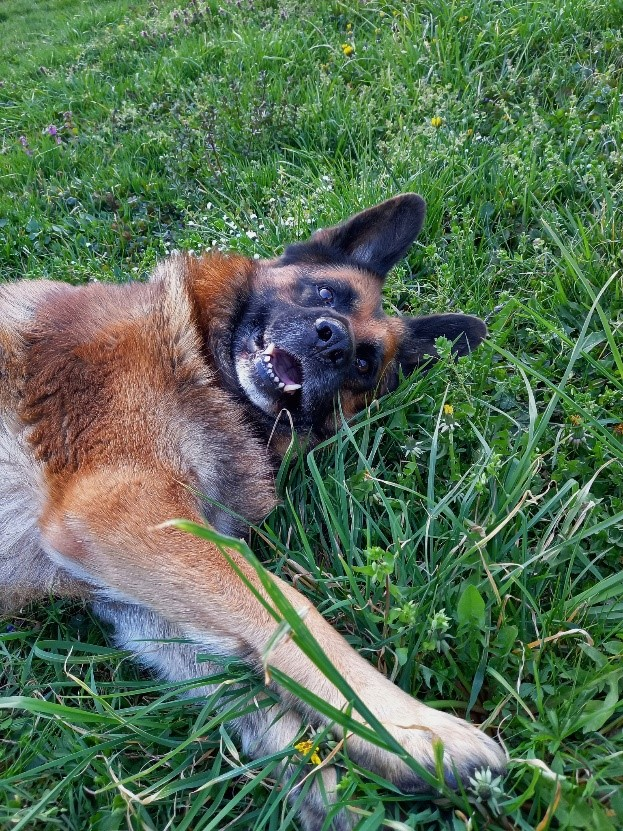

PSI
1. zašto su psi bitni?
Svi znamo poznatu rečenicu pas je čovjekov najbolji prijatelj. No je li ona istinita?
Psi nas uče bezuvjetnoj ljubavi, lojalni su, uvijek nas nasmiju, nikad ne osuđuju i uz sve to su preslatki.
Osim što su savršeni ljubimci imaju bitne uloge u društvu; policijski psi, psi vodiči, psi tragači (u
lavinama), terapijski psi, nekim ljudima psi pomažu reducirati stres, anksioznost, daju im svrhu i
općenito uljepšavaju život.

AKTIVNI PSI
OBITELJSKI PSI
VRSTE PASA ZA NEAKTIVNE LJUDE
RADNI PSI